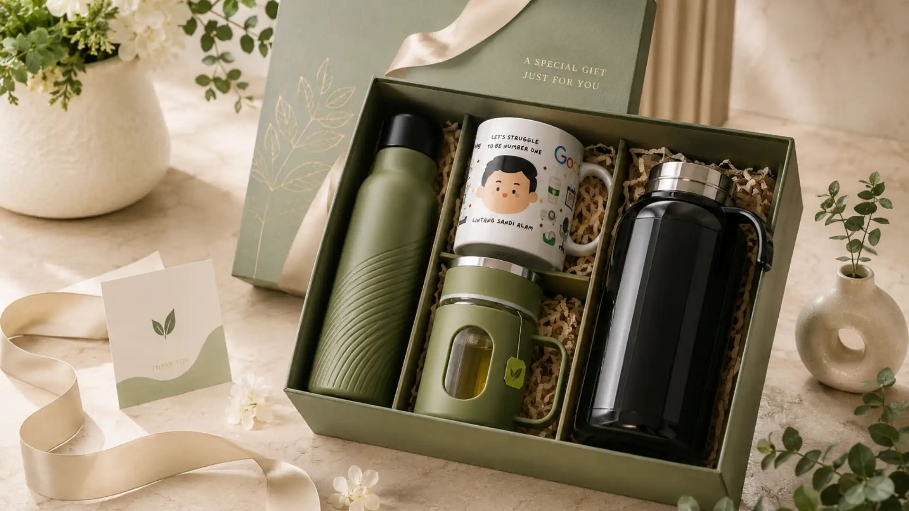

Waktu Tepat Memberi Hadiah Korporat untuk Klien dan Relasi Bisnis
Ringkasan
- Momen akhir tahun menjadi waktu paling umum untuk memberikan hadiah korporat.
- Penandatanganan kontrak dan kerja sama baru juga menjadi momen strategis.
- Timing yang tepat memperkuat kesan profesional dan perhatian perusahaan.
- Persiapan hadiah sebaiknya dilakukan jauh sebelum momen penting berlangsung.
- tumblersouvenir.com membantu perusahaan mempersiapkan hadiah korporat tepat waktu dan berkesan.
Daftar Isi
Waktu tepat memberi hadiah korporat untuk klien umumnya bertepatan dengan momen simbolis seperti akhir tahun, penandatanganan kontrak baru, atau perayaan ulang tahun perusahaan. Pemilihan waktu yang relevan membuat hadiah lebih bermakna dan meningkatkan kesan positif terhadap perusahaan pemberi.
Kapan Waktu Terbaik Memberikan Hadiah kepada Klien Perusahaan?
Waktu terbaik memberikan hadiah kepada klien perusahaan adalah saat momen yang memiliki nilai simbolis bagi hubungan bisnis, seperti pergantian tahun, pencapaian kerja sama tertentu, atau perayaan penting perusahaan.
Momen-momen tersebut memberikan konteks yang jelas terhadap alasan pemberian hadiah, sehingga penerima dapat memahami makna di baliknya secara lebih personal. Hadiah yang diberikan tanpa konteks yang jelas cenderung terasa kurang bermakna dibanding hadiah yang menyertai momen tertentu dalam perjalanan relasi bisnis.
Selain itu, waktu pemberian hadiah yang konsisten setiap tahun, misalnya pada momen pergantian tahun, juga membantu membangun ritme hubungan bisnis yang positif dan dinantikan oleh klien maupun mitra kerja.
Momen Penting: Akhir Tahun, Ulang Tahun Perusahaan, dan Penandatanganan Kontrak
Terdapat beberapa momen penting yang secara umum menjadi waktu ideal bagi perusahaan untuk memberikan hadiah korporat kepada klien dan relasi bisnisnya.
Hadiah Akhir Tahun sebagai Ucapan Terima Kasih
Momen akhir tahun umumnya dijadikan waktu untuk menyampaikan apresiasi atas kerja sama yang telah berjalan sepanjang tahun. Hadiah pada momen ini biasanya bersifat lebih personal dan mencerminkan ucapan terima kasih perusahaan kepada klien atas kepercayaan yang diberikan selama periode tersebut. Banyak perusahaan mempersiapkan hadiah akhir tahun ini beberapa bulan sebelumnya agar proses personalisasi dan produksi berjalan lancar.

Momen Kerja Sama Baru dan Perpanjangan Kontrak
Penandatanganan kontrak baru maupun perpanjangan kerja sama juga menjadi momen strategis untuk memberikan hadiah korporat. Pemberian hadiah pada momen ini menandakan awal atau kelanjutan hubungan bisnis yang positif, sekaligus memperkuat komitmen perusahaan terhadap kerja sama yang telah disepakati.
Apakah Timing Pemberian Hadiah Memengaruhi Kesan terhadap Perusahaan?
Timing pemberian hadiah memengaruhi kesan terhadap perusahaan karena hadiah yang diberikan pada momen relevan cenderung dianggap lebih tulus dan terencana dibanding hadiah yang diberikan secara acak tanpa konteks jelas.
Ketepatan waktu menunjukkan bahwa perusahaan memperhatikan detail dalam menjalin relasi bisnis, bukan sekadar menjalankan rutinitas formalitas. Sebaliknya, hadiah yang diberikan terlambat atau tanpa mempertimbangkan momen penting dapat mengurangi dampak positif yang seharusnya diperoleh, bahkan berpotensi menimbulkan kesan kurang profesional.
Mempersiapkan Hadiah Korporat Secara Tepat Waktu
Persiapan hadiah korporat sebaiknya dilakukan jauh sebelum momen penting berlangsung, mengingat proses personalisasi produk seperti tumbler custom logo memerlukan waktu untuk desain, produksi, hingga pengemasan.
Perusahaan disarankan menyusun kalender momen penting terkait klien dan mitra bisnis di awal tahun, sehingga proses pemesanan hadiah dapat direncanakan lebih matang. Perencanaan yang baik turut menghindarkan perusahaan dari risiko keterlambatan pengiriman hadiah, terutama pada momen-momen dengan permintaan tinggi seperti menjelang akhir tahun.
Waktu pemberian hadiah korporat memiliki peran besar dalam menentukan seberapa berkesan hadiah tersebut di mata klien dan mitra bisnis. Momen seperti akhir tahun dan penandatanganan kontrak menjadi kesempatan strategis untuk memperkuat relasi bisnis melalui hadiah yang tepat.